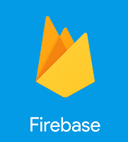
In this lab, you will gain experience with Firebase, a backend-as-a-service solution that allows developers to rapidly prototype applications without having to implement common pieces of functionality. While platform offerings like Firebase can save time, they do lock the application into a specific vendor.
One of the key features of Firebase is its real-time database support. With modern web and mobile applications shifting more of its functionality to the client, backend servers that used to provide Model, View, and Controller functions now only implement a Model that is accessible via asynchronous API calls from the client. This lab will demonstrate this pattern using a chat application.
For this lab, we require a new project to be created. The project will be automatically deleted when we delete the associated Firebase project. Visit the web console and in the project selection window, click on "New Project". Name the project firebase-<OdinID> and associate it with your course billing account.
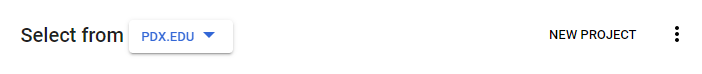
Firebase has a separate console on Google Cloud. Visit its console at https://console.firebase.google.com/ and add a project. When entering your project name, add it to the Google Cloud Platform project created above and click "Continue".
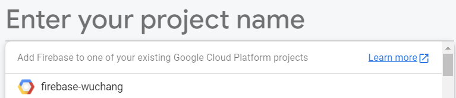
Confirm the defaults for the following prompts, but when asked to collect Google Analytics, turn them off.
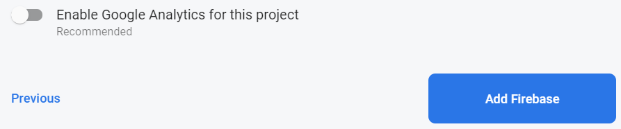
Most web applications require a backend that supports clients running on mobile platforms (Android, iOS) as well as the web. While Firebase has support for all of them, we'll only be focusing on a web client version. From the Firebase console, visit the "Project Overview", and add an application, specifying a web application for the new application created.
Register the application.
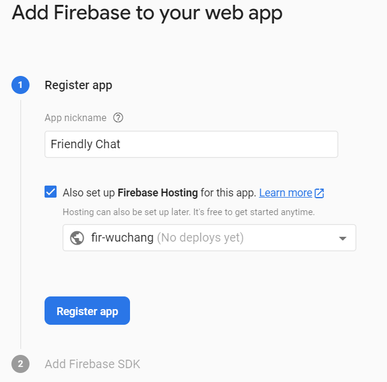
Skip the next steps for including Firebase in your application. We will be using code from a repository and adding the necessary support to it in Cloud Shell.
From the Firebase console, visit Build=>Authentication and configure the sign-In method to enable Google account logins for your web application.
Name the application FriendlyChat, set your e-mail address, and save the settings.
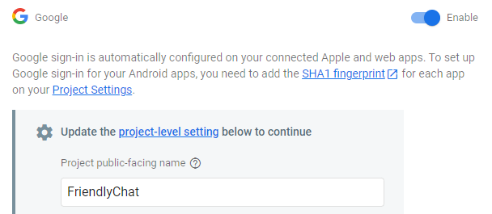
Firebase restricts access to its resources to specific domains for security purposes. We'll be testing our application from Cloud Shell. To enable access from it, we need to add it in the list of authorized domains. Within Authentication, locate its settings and find the configuration for authorized domains. Add, the cloudshell.dev domain to the list.
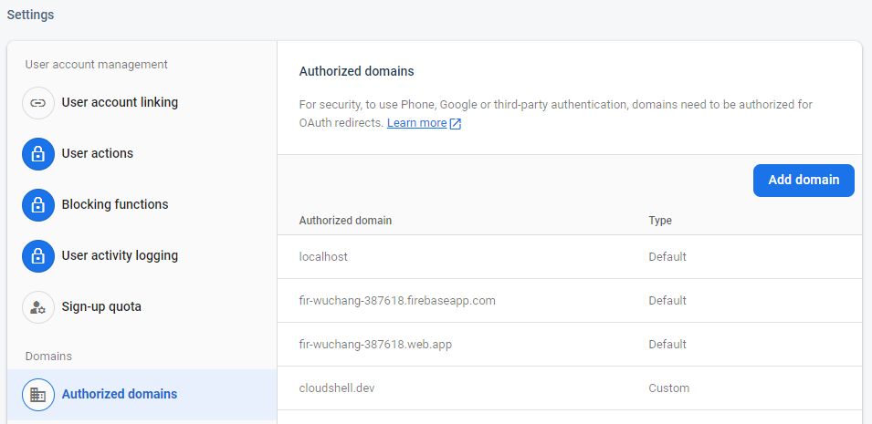
Answer the following questions for your lab notebook
- What other domains are given access to this Firebase project by default?
From the Firebase console, visit Build=>Firestore Database and "Create database". Firestore Database is Firebase's latest real-time database and is a replacement for its older Realtime database. Enable "Start in test mode..." and use the default region settings.
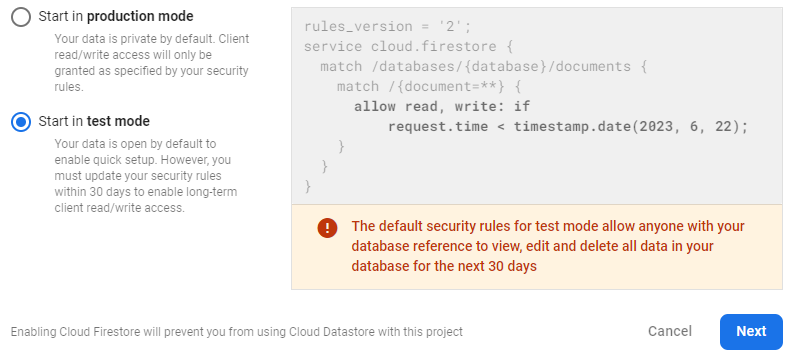
From the Firebase console, visit Build=>Storage and get started configuring the storage for your application. Configure the bucket in "Test mode" with its security rules allowing public access by default. Keep the default setting by clicking "Next". Then, keep the storage region to the default setting.
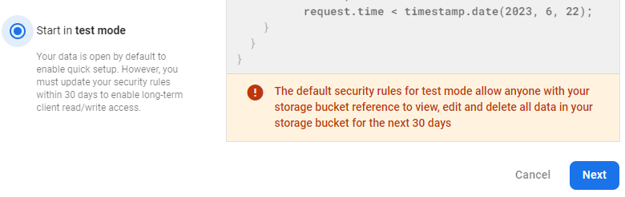
Bring up the firebase-<OdinID> project on the Google Cloud Platform console. Then, bring up a Cloud Shell session and clone the repository and use Node's package manager (npm) to install the Firebase command-line interface.
git clone https://github.com/firebase/codelab-friendlychat-web npm -g install firebase-tools
Verify that the CLI has been installed correctly by obtaining the version of Firebase.
firebase --version
Authorize your installation so that it can deploy resources on your project. We need to first logout in order to force a reauthorization and obtain an OAuth token configured with appropriate access:
firebase logout firebase login --no-localhost
Visit the URL given and login to your account. Allow access for the Firebase CLI.
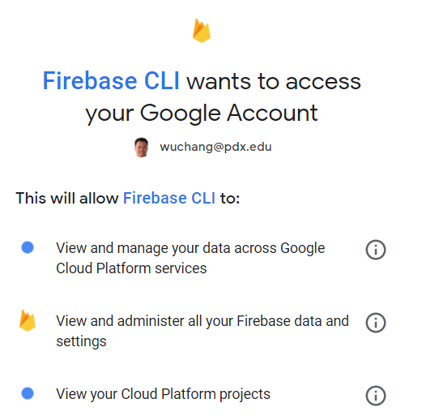
Follow the instructions to get the OAuth authorization code:

Paste it in to complete the login.
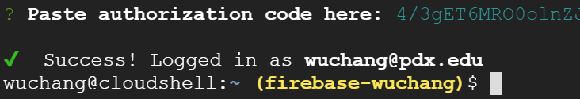
Change into the web-start directory, then connect the Firebase CLI to the Firebase project created earlier.
cd codelab-friendlychat-web/web-start firebase use --add
Use the arrow keys to select your project and hit 'Enter'. Then, set the alias to 'default'.
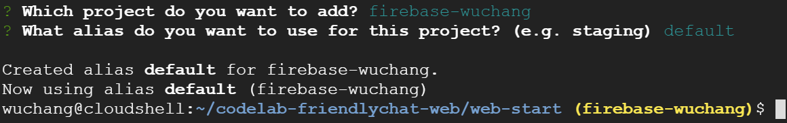
The static assets of the main web application reside in the public directory. In Cloud Shell, launch the code editor to view index.html
edit public/index.html
The HTML builds a basic skeleton for a UI. The elements within the skeleton will be populated via application code that will eventually reside in scripts/main.js. Scroll to the bottom of the file to see its inclusion.
public/index.html
</div>
<!-- This script is created by webpack -->
<script src="scripts/main.js"></script>
</body>
</html>Note that this file does not yet exist. It is instead generated via webpack, a tool that can produce compressed, optimized versions of web content for faster delivery. For this application, webpack will take the Javascript files located in the src directory, and dynamically generate public/scripts/main.js from them.
To create the initial version of scripts/main.js, bring up a separate terminal in Cloud Shell by clicking on the + icon.

Then, change into the web-start directory to run the following npm commands that will run webpack in the background to continuously build your application the files in the src directory. Leave this terminal tab open for the duration of the lab.
cd web-start npm install npm run start
Go back to the other Cloud Shell terminal and bring up the file that has been produced by webpack.
- Take a screenshot of the first 10 lines of the produced file.
Our code in web-start must be configured so that it can be properly associated with the Firebase project we set up initially. Visit the application we registered in the Firebase console. Click on "Project Settings"
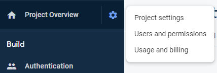
Scroll down to find the application.
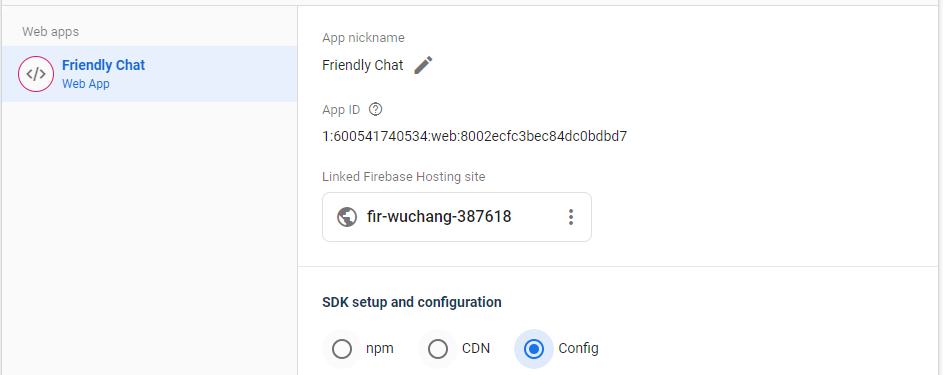
Within the application is an SDK setup and configuration section. Click on "Config" to bring up the initialization code that specifies the application's information, including its authDomain and apiKey. Copy the content of the firebaseConfig. We will need to add this information to our application.
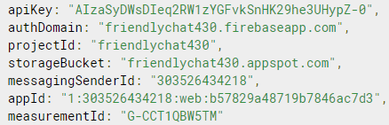
In Cloud Shell, bring up src/firebase-config.js and paste the content above into the config variable as shown below.
src/firebase-config.js
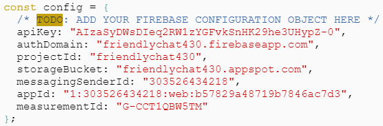
After making this change, webpack will automatically recompile the application to include the updated configuration.
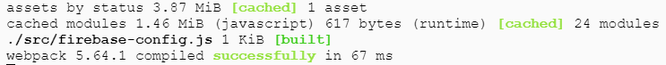
We will be incrementally modifying our application code in src/index.js which webpack will then compile into scripts/main.js.
To get started, visit the file and go to the end of the file and modify it to initialize Firebase from the configuration information we previously included:
src/index.js
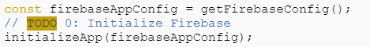
We will now view the application. Go back to the Cloud Shell terminal and ensure you are in the web-start directory. Launch the Firebase hosting emulator to serve the code. This emulator runs the application locally for testing purposes.
firebase serve --only hosting
The command will return a link to a local server.
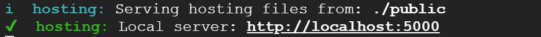
Click the link to visit it or go to Web Preview, change the port to 5000 and then preview the page.
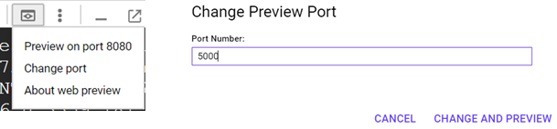
You should get the following application that isn't very functional (yet). Notice that the URL contains the domain that we enabled earlier in the Firebase project settings.
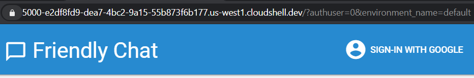
Go back to Cloud Shell and type Ctrl+c to exit.
In Cloud Shell, launch the code editor to view the application's code at src/index.js. The file contains the functionality for implementing a chat application in which users can authenticate and send each other messages in real-time. The code is not completely filled in so that we can demonstrate how Firebase provides functionality to applications. View the code and answer the following questions for your lab notebook:
- What missing functions deal with user authentication?
- What missing functions deal with sending and receiving messages?
We will be filling these functions in.
First, use the code below to implement signIn for when the user clicks the "Sign in with Google" button. With just two lines, we can add authentication using Google as the identity provider to the application (via OAuth). Note that we use a pop-up window to do so. Your browser must be enabled to allow pop-ups for this to work.
// Sign into Firebase using popup auth & Google as the identity provider.
var provider = new GoogleAuthProvider();
await signInWithPopup(getAuth(), provider);Next, use the code below to implement signOut for when the user clicks "Sign out" in the UI.
// Sign out of Firebase.
signOut(getAuth());We need to update the UI when users change their authentication state. The callback function is registered when we set authentication up in initFirebaseAuth. Add the following code to implement this function.
// Subscribe to the user's signed-in status
onAuthStateChanged(getAuth(), authStateObserver);The function that is registered is authStateObserver(). Scroll down to the function and see that it hides and unhides the UI elements of the HTML page based on whether or not the user is signed in. At the bottom of this function, view the code for when a user is not signed in.
Answer the following questions:
- What are the names of the elements that are hidden when the user is signed out?
- What is the name of the element that is not hidden when the user is signed out?
Above this code, is code that sets the UI elements for when the user is logged in. It retrieves both the profile picture URL and the name of the user from the user's authentication information provided by Google. We will fill in the code that implements them.
First, implement getProfilePicUrl with the code below that pulls the URL from the user's authentication context:
return getAuth().currentUser.photoURL || '/images/profile_placeholder.png';Then, implement getUserName that pulls the display name:
return getAuth().currentUser.displayName;Finally, if a user attempts to send a message while not logged in, the application generates an error message. Implement the isUserSignedIn function to perform this check.
return !!getAuth().currentUser;Save the file after making the changes. webpack will then automatically recompile the application.
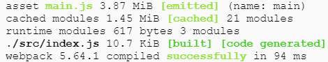
Change into the web-start directory and launch the Firebase hosting emulator to serve the Firebase application again from the Cloud Shell command-line. Visit the site and attempt to send a message. If the code for isUserSignedIn is working properly, an error message should appear.
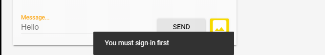
Click on "SIGN-IN WITH GOOGLE". Login to your PSU account and see that its profile picture and name have now been included in the UI.
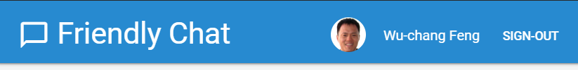
Some troubleshooting notes:
- If the authentication pop-up does not appear, ensure the domain configuration of cloudshell.dev has been done appropriately.
- If the sign-in fails to work, ensure that third-party cookies are enabled in your browser Chrome=>Settings=>Advanced=>Privacy and Security=>Site Settings=>Cookies and other site data=>Block Third Party Cookies (disable setting)
Attempt to send another message. While the error message no longer appears, because we haven't added the code for messaging, nothing happens. Return to Cloud Shell and exit out of the emulator.
We will now implement the messaging functionality. In Cloud Shell, go back to the code editor and src/index.js. Find the stub for sending text messages when the "Send" button is clicked. We'll be using Firestore to send messages. The code uses the Firestore API's addDoc() call to add a message to the appropriate collection. A JSON object containing the user's name, the text, the URL of the user's profile picture, and the timestamp are added to the database.
// Add a new message entry to the database.
try {
await addDoc(collection(getFirestore(), 'messages'), {
name: getUserName(),
text: messageText,
profilePicUrl: getProfilePicUrl(),
timestamp: serverTimestamp()
});
}
catch(error) {
console.error('Error writing new message to Firebase Database', error);
}To view the messages that have been sent, we must also update the code for rendering messages in the UI. Visit the stub that implements the loading of messages from the Firestore backend and paste in the code below. The code creates a Firestore query on the messages collection asking for the most recent 12 messages in the collection. The power of the real-time database functionality that Firestore provides comes in the next statement where the query creates a listener that triggers when the results of the query change. It does so by registering a callback via its onSnapshot method. The callback code removes the DOM elements of deleted messages and displays any new messages that have been sent.
// Create the query to load the last 12 messages and listen for new ones.
const recentMessagesQuery = query(collection(getFirestore(), 'messages'), orderBy('timestamp', 'desc'), limit(12));
// Start listening to the query.
onSnapshot(recentMessagesQuery, function(snapshot) {
snapshot.docChanges().forEach(function(change) {
if (change.type === 'removed') {
deleteMessage(change.doc.id);
} else {
var message = change.doc.data();
displayMessage(change.doc.id, message.timestamp, message.name,
message.text, message.profilePicUrl, message.imageUrl);
}
});
});All clients that visit the application share access to the Firestore database and can now synchronize messages in real-time. As Firebase supports mobile platforms, native clients on mobile platforms such as Android and iOS can also bring up the messages. Codelabs for doing so for this application can be found here and here.
Go back to Cloud Shell and serve your application again. Sign-in, then send a message. The message will be inserted into the Firestore database and the UI will automatically be updated with both the message and the account profile picture.

Go back to the Firebase console and bring up the application's Firestore database. Expand the messages collection and find the document containing the message within it.
- Include a screenshot of the message and its fields in the database for your lab notebook
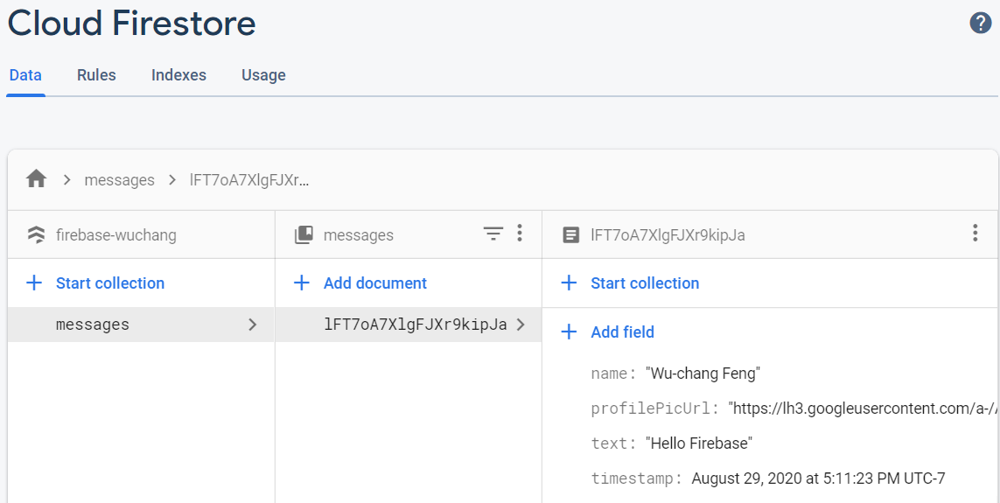
Within the Cloud Firestore UI, we will now manually add a message and see that it updates the UI in real-time automatically. Under the messages collection, click "Add document", then click on "Auto-ID" to generate a unique Document ID. Then, create fields with the associated data types using the UI that have the following values:
- name (string) : Wu
- profilePicUrl (string) : https://www.pdx.edu/computer-science/sites/computerscience.web.wdt.pdx.edu/files/2020-06/Wu-chang.jpg
- text (string) : Pretend the instructor added a message
- timestamp (timestamp) : Set to today's date and time
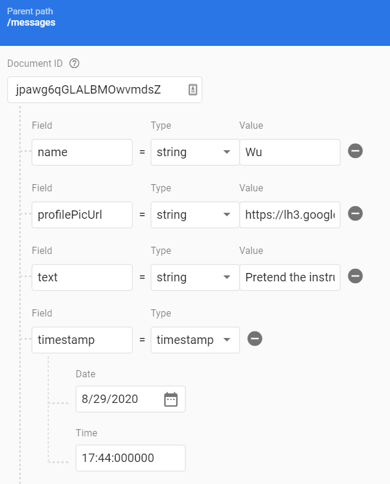
Save the document and re-visit the Friendly Chat application.
- Include a screenshot of the application with its two messages for your lab notebook
As a database, Cloud Firestore is good for storing structured data. For unstructured files such as image uploads, Cloud Storage is more appropriate. The next step will allow users to upload images to the chat application which will then be stored in Cloud Storage. A URL link to the image will then be included in the messages' data. When the application comes across an image URL, it simply returns the contents of it to the application.
In Cloud Shell, bring up the code editor and find the stub for handling images. Use the following code to implement it:
try {
// 1 - We add a message with a loading icon that will get updated with the shared image.
const messageRef = await addDoc(collection(getFirestore(), 'messages'), {
name: getUserName(),
imageUrl: LOADING_IMAGE_URL,
profilePicUrl: getProfilePicUrl(),
timestamp: serverTimestamp()
});
// 2 - Upload the image to Cloud Storage.
const filePath = `${getAuth().currentUser.uid}/${messageRef.id}/${file.name}`;
const newImageRef = ref(getStorage(), filePath);
const fileSnapshot = await uploadBytesResumable(newImageRef, file);
// 3 - Generate a public URL for the file.
const publicImageUrl = await getDownloadURL(newImageRef);
// 4 - Update the chat message placeholder with the image's URL.
await updateDoc(messageRef,{
imageUrl: publicImageUrl,
storageUri: fileSnapshot.metadata.fullPath
});
} catch (error) {
console.error('There was an error uploading a file to Cloud Storage:', error);
}Through a series of asynchronous calls, the code
- Adds the message to the database using
addDoc(). Instead of atextfield, animageUrlfield is included and is initially set toLOADING_IMAGE_URL. This serves as a temporary image in the UI as the image is being uploaded - After insertion, the code then generates a path for the file in the application's storage bucket. It then places the image sent by the user there.
- Once in the bucket, the code obtains the image's public URL in the bucket (
getDownloadURL()) and then updates the message to replace the placeholder image.
In examining the code, answer the following question for your lab notebook:
- What is the URL of the image that is first shown in the UI as the message is loading?
Go back to Cloud Shell and serve your application again. Sign-in, then click on the image icon and send an image.
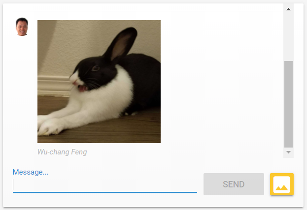
Go back to the Firebase console and bring up the application's Firestore database. Expand the messages collection and find the document containing the message within it.
Answer the following questions:
- How do the fields in an image document differ from that of the text document?
- What URL and storage location can the image be found at?
Visit the "Storage" section in the Firebase console
- Take a screenshot of the image in the storage bucket for your lab notebook.
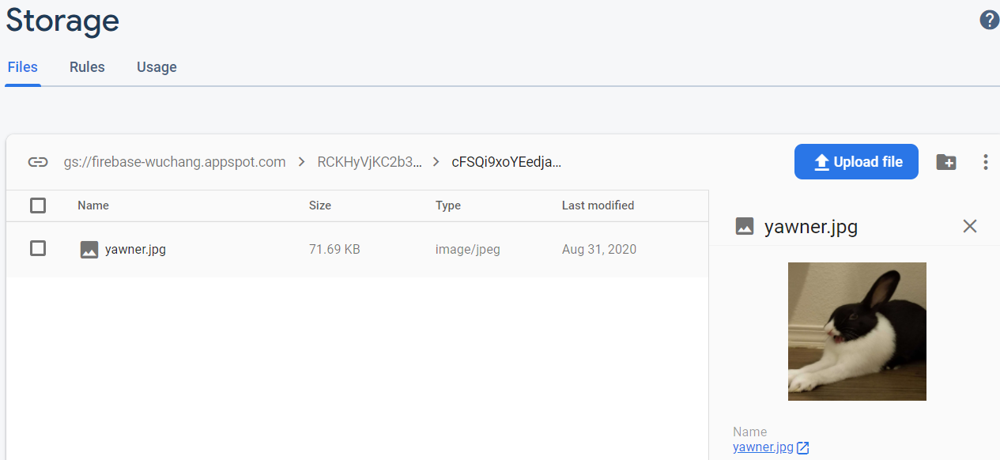
Up until now, we have been using the Firebase emulator within Cloud Shell to host the site. When the application is ready, we can deploy it as a managed application in Firebase using Firebase's hosting service. The service automatically distributes the static assets across multiple data centers and replicates the content based on usage. This is similar to other serverless platform solutions such as App Engine.
To manage the deployment, Firebase uses a JSON file. Bring up the file in firebase.json.
Answer the following questions:
- What directory is the application going to be served from?
In the directory containing the deployment file, deploy the application:
firebase deploy --except functions
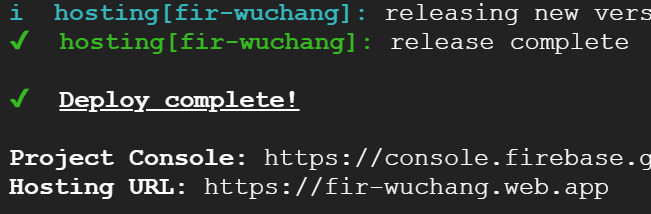
After deployment has finished, the URL for the deployment is returned. Note that its domain (web.app) has been previously authorized by our Firebase application during the project's setup. Visit the site and send the URL to someone you know in the class, the TA, or the course instructor to add a message to your application.
- Take a screenshot of the message including the URL for your lab notebook.
Go back to the Firebase console and visit the project's settings.
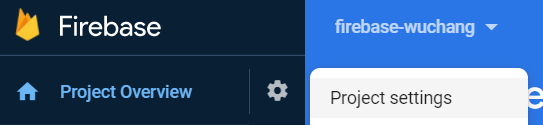
Scroll to the bottom and "Delete Project".
Confirm all selections to delete the project both from the Firebase and Google Cloud Platform consoles.
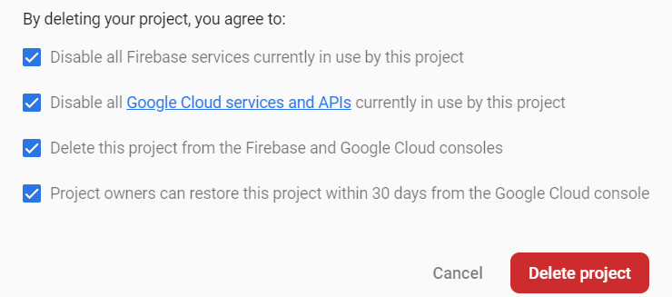